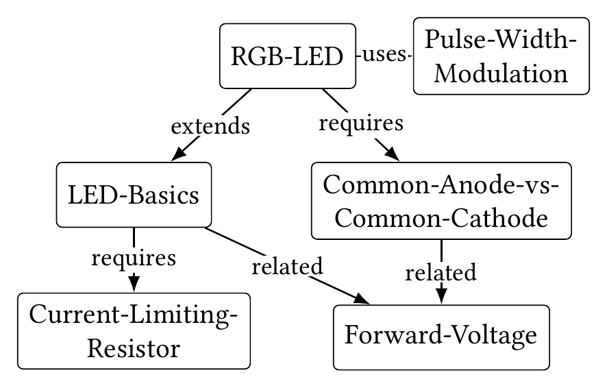

A Wiki-Grounded Educational Gateway for Course-Aware Socratic LLM Tutoring
Priscila Saboia Moreira, Charles Vardeman II, Christopher R. Sweet · Center for Research Computing, University of Notre Dame · Gateways 2026, Washington, DC
Generic chatbots answer lab assignments well and, in doing so, remove the reasoning the assignment was designed to elicit. Giving the model the course notes does not fix this: a grounded answer is still a delivered answer. The gateway changes the interaction instead. A course wiki the instructor curates holds the knowledge. A Socratic prompt forbids answer delivery and requires every reply to cite a wiki page visibly. In 225 scripted adversarial sessions across three models, the refusal gave way in six incremental-extraction sessions and held in the rest.
A recorded session
55 seconds, no audio. The tutor turns were generated live by the Claude Code tutor against the course wiki, May 2026. The student was role-played by a co-author, not a student. The student asks for the whole solution, the tutor refuses, quotes the LED-Basics and Forward-Voltage pages, and the student sizes the resistor.

What is where
| What | Where |
|---|---|
| Paper | Forthcoming in the Gateways 2026 proceedings (ACM, open access). The link will be added here once published. |
| Talk slides | slides/ on this site: the deck as presented, 11 slides, arrow keys or click to move, N for speaker notes, F for fullscreen. The video plays on its slide. |
| The tutor: launcher, Socratic prompt, course wiki | chrissweet/microelectronics-tutor-demo |
| Template a new course forks | chrissweet/llm-wiki-tutor-template |
| All 225 probe sessions, raw JSON, probes, rubric, runners | psaboia/wiki-grounded-tutor-eval |
| Companion paper on the memory substrate | Beyond Memory, Zenodo |
| Course curriculum, Purdue SCALE | Introduction to Engineering with Microelectronics |
Source of this page: psaboia/gateways-2026-tutor-paper.